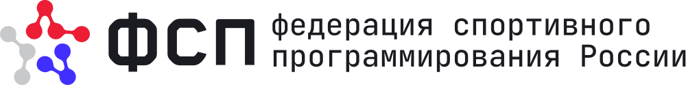

Анонимные проверенные профили по роли и грейду. Нажмите на ячейку, чтобы открыть выдачу с уже выставленными фильтрами.
36 профилей, медиана ожиданий 275 000 ₽
3 профиля, из них 2 с подтверждением ФСП
62% профилей подтверждены ФСП, много призёров по информационной безопасности